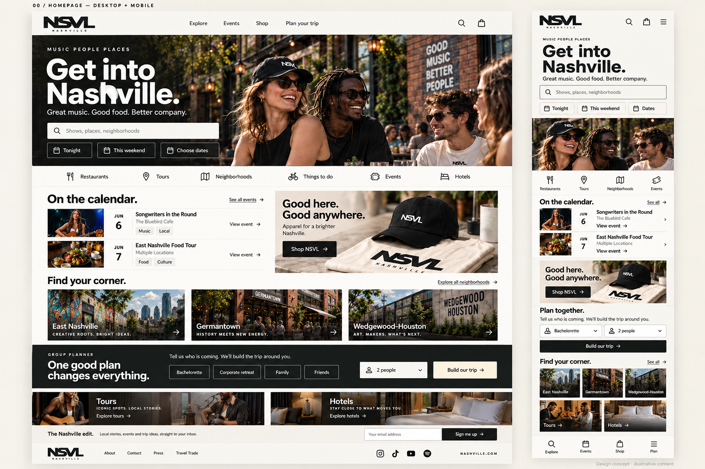
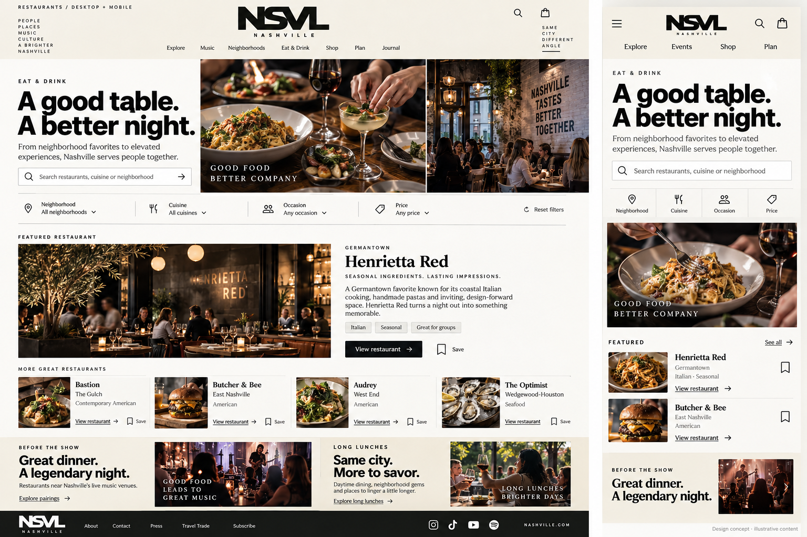
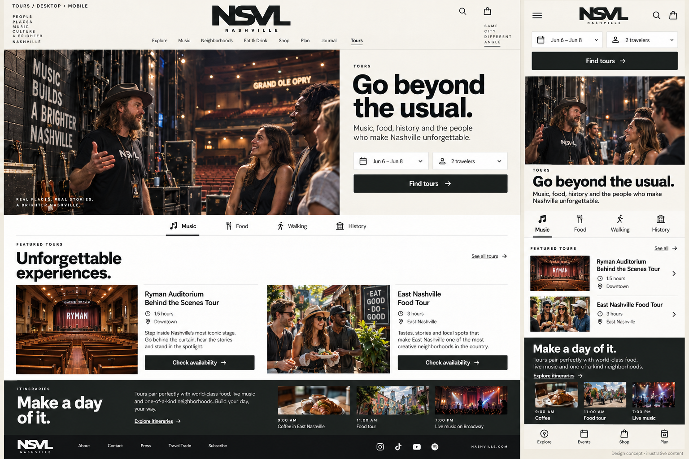
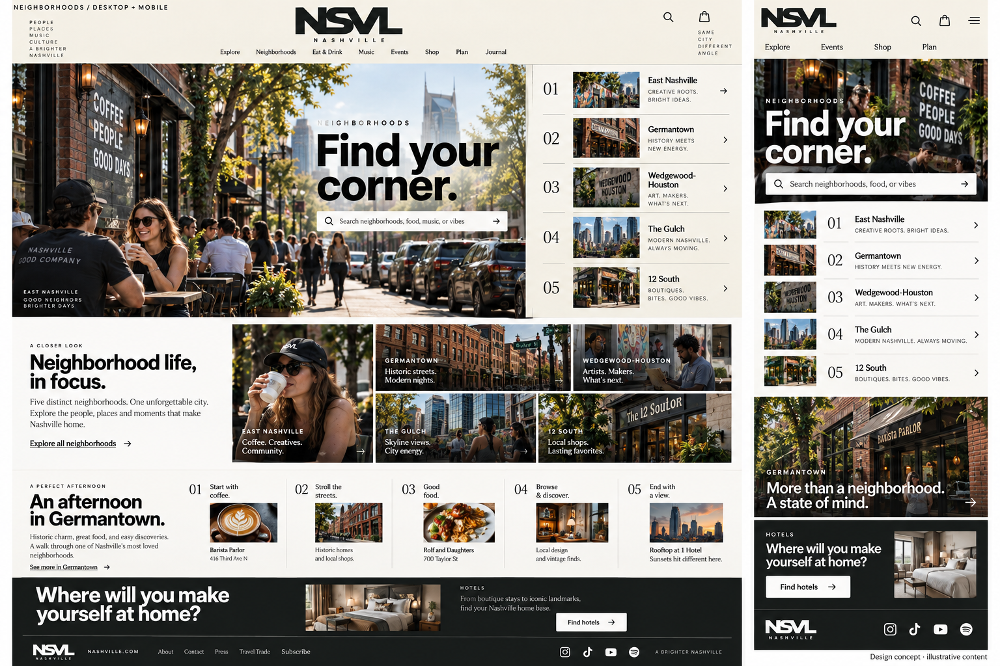
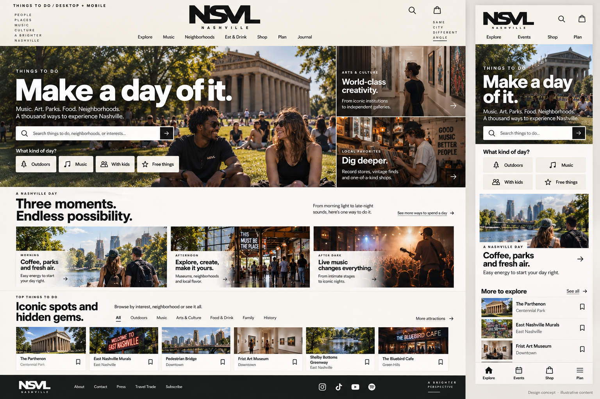
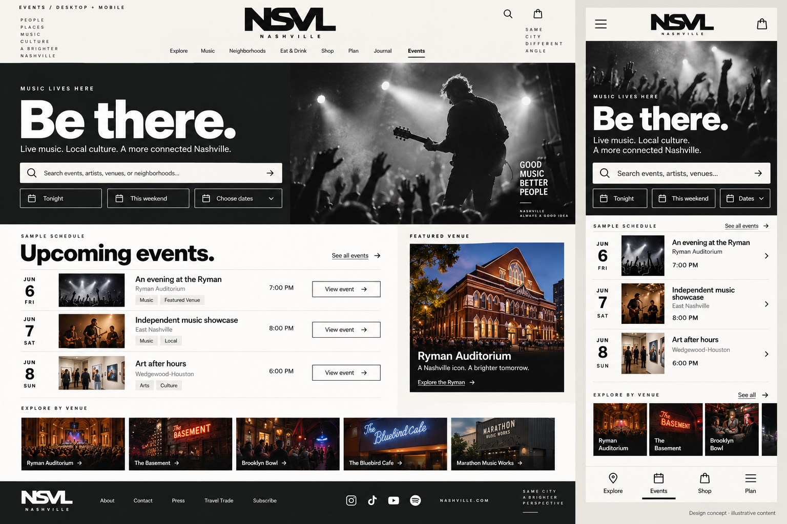
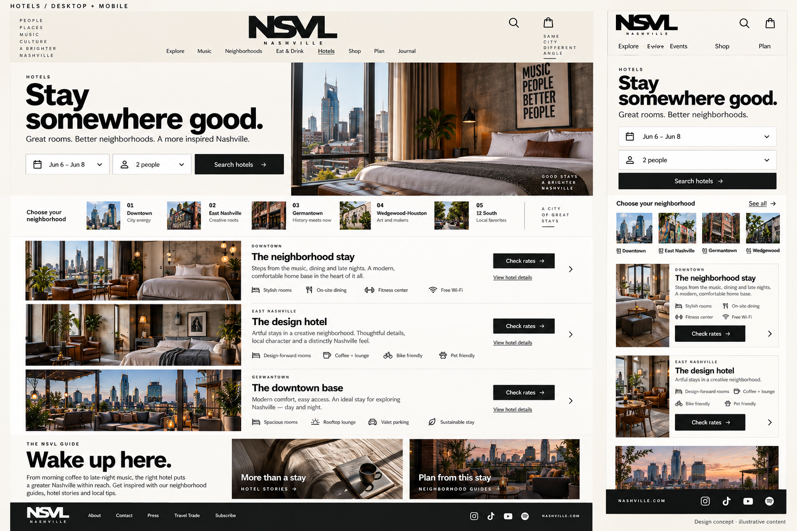
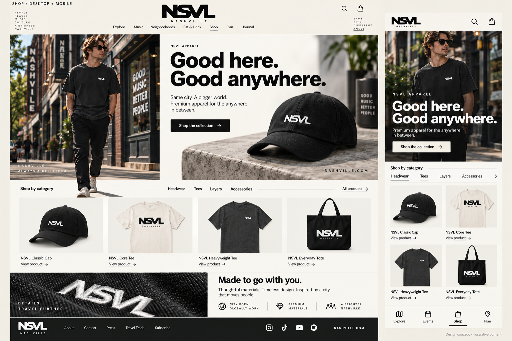
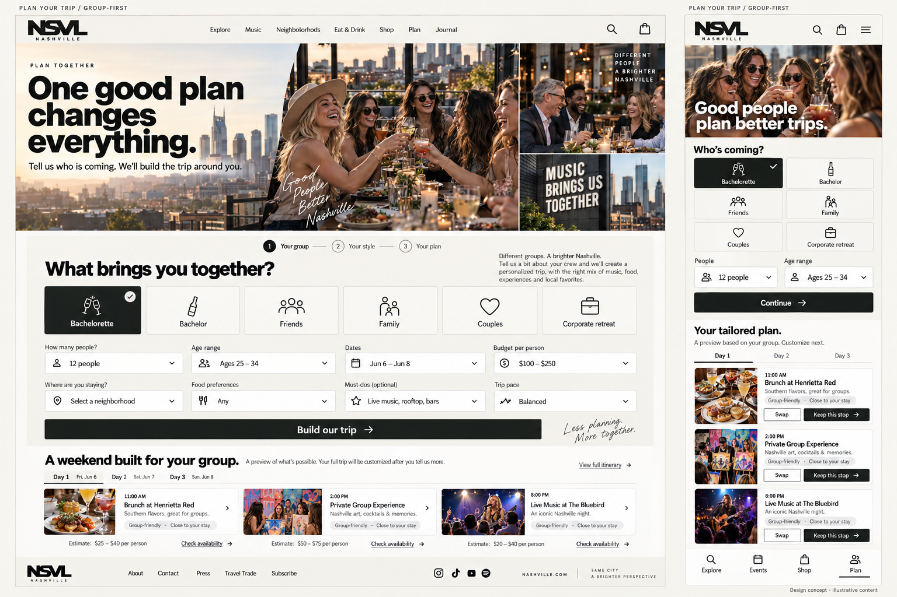

Homepage
Search, events, apparel and group planning brought together in one mobile-first city destination.

Open full-size homepage design →Detailed desktop and mobile concepts. Paper White and Charcoal Ink. Each image includes a desktop composition and mobile adaptation. All photography, merchandise and listing details are illustrative and require verified production replacements.
Search, events, apparel and group planning brought together in one mobile-first city destination.

Open full-size homepage design →A dining editorial: shared tables, compact discovery and an evening built around dinner.

Open full-size restaurants design →Experiences with visible date and traveler selection, useful booking details and context.

Open full-size tours design →A numbered city field guide with street photography and half-day itineraries.

Open full-size neighborhoods design →Intent-led discovery and a morning-to-evening editorial rhythm.

Open full-size things to do design →A live-music identity organized around an immediately useful dated schedule.

Open full-size events design →An editorial shortlist of stays, practical search and generous hotel photography.

Open full-size hotels design →A fashion storefront with a campaign, product grid and material detail.

Open full-size shop design →Occasion, headcount, age ranges and preferences drive a tailored, feasible group itinerary.

Open full-size plan your trip design →